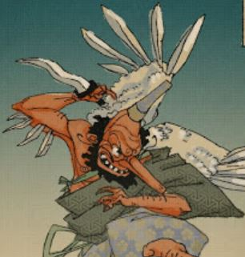

Günther Reibekuchen est 8ièm dan de kendo, multi-médaillé et professeur principal du club kobura kai kendo club bruxelles (コブラ 会).
Reibekuchen senseï est né en Allemagne de l'Est le 30 avril 1979. Son père, un militaire de carrière belge installé en allemagne, l'a éduqué à la dure et c'est tout naturellement qu'il a développé un sens aigu du combat. Il a commencé le kendo à 14 ans. A 15 ans il remportait les championnats de belgique en catégorie pandas. A 19 il est parti au Japon et a rencontré Ishio Sensei. Ce fut une révélation qui le changea à jamais.